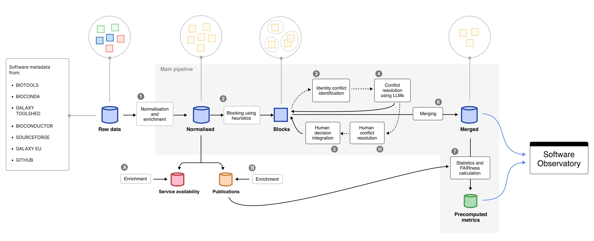

Pipeline Stages¶
Overview¶
The Research Software Observatory – Data Pipeline orchestrates the consolidation, enrichment, and integration of software metadata into analysis-ready datasets consumed by the Research Software Observatory.

Overview of the main and auxiliary pipelines of the Research Software Observatory. Raw data importers are external to this repository and act as upstream inputs.
The pipeline operates downstream of independent importer processes, which periodically collect and normalize metadata from external registries such as bio.tools, Bioconda, Galaxy, and others. These importer components are maintained separately and populate the raw data layer, which serves as the entry point of this pipeline.
The pipeline then performs:
- Normalization and enrichment of software metadata
- Integration and disambiguation of duplicate records
- FAIRsoft score computation and statistics generation
- Auxiliary enrichments such as publications and service availability
Execution model¶
In normal maintenance work, the pipeline is usually executed in one of two ways:
- Run the main pipeline until disambiguation
This is the usual option when new identity conflicts may require human review. The pipeline generates the intermediate files, performs automated disambiguation, and creates the outputs needed for manual annotation.
bash
rsetl run --until disambiguation --tag <TAG>
- Run the full pipeline
This is used when the data can be processed end-to-end, or when no manual curation round is expected.
bash
rsetl run --tag <TAG>
After human annotation has been completed and committed, the latest relevant run should be resumed from the human_updates stage. This reuses the existing run directory and applies the curator decisions before continuing with merge, statistics, and FAIRsoft scoring.
rsetl run --resume-run latest --from-stage human_updates
Alternatively, use the explicit run ID:
rsetl run --resume-run <RUN_ID> --from-stage human_updates
This is important because the human annotations correspond to the conflict files generated in that specific run. Starting a fresh run after annotation may produce different block or conflict identifiers and can make the annotations impossible to apply correctly.
Main pipeline stages¶
The full pipeline is composed of the following stages, in execution order:
| # | Stage | CLI Module / Script | Description | External Services |
|---|---|---|---|---|
| 1 | Transformation | src.adapters.cli.transformation.transformation |
Loads and normalizes raw metadata from MongoDB sources. | MongoDB |
| 2 | License normalization | src.adapters.cli.post_transformation.normalize_licenses |
Maps license information to standardized SPDX identifiers. | MongoDB |
| 3 | Grouping / blocking & recovery | src.adapters.cli.integration.group_and_recovery |
Groups records into candidate identity blocks using names and repository-like links. | MongoDB |
| — | Remove OEB metrics | scripts/utils/remove_oeb_metrics.py |
Removes redundant OpenEBench metric entries to reduce noise and processing time. | — |
| 4 | Conflict detection | src.adapters.cli.integration.conflict_detection |
Identifies disconnected records within blocks as potential identity conflicts. | — |
| — | Simplify blocks | scripts/utils/simplify_grouped_entries.py |
Reduces block structure to the minimal representation needed downstream. | — |
| — | JSON to JSONL conversion | scripts/utils/json_to_jsonl.py |
Converts conflict and block files into JSONL format. | — |
| 5 | Disambiguation | src.adapters.cli.integration.disambiguation |
Resolves conflicts using heuristics and LLM-based agreement scoring. Can generate manual-review issues for unresolved cases. | OpenRouter, Hugging Face, GitHub, GitLab |
| 6 | Human updates | src.adapters.cli.integration.update_disambiguation_after_human_resolution |
Integrates curator decisions from human_annotations/ into the disambiguation output. |
Git |
| 7 | Merge | src.adapters.cli.integration.merge_entries |
Consolidates resolved records into unified software entries, carrying each tool's _id over from the previous run and promoting them into the live collection. See Tool identity & collection promotion. |
MongoDB |
| 8 | FAIRsoft scoring | src.adapters.cli.fair_scores |
Computes FAIRsoft indicators and scores for software entries. | MongoDB |
| 9 | Statistics | src.adapters.cli.generate_stats |
Computes descriptive statistics for Observatory dashboards. | MongoDB |
| 10 | Similarity | src.adapters.cli.similarity |
Embeds tool descriptions using gte-modernbert-base and precomputes the top-10 nearest neighbours per tool, stored in similaritiesDev to power "similar software" recommendations. |
MongoDB, HuggingFace (model download) |
Stage order
FAIRsoft scoring runs before statistics — the STAGES list in src/adapters/cli/pipeline_full.py is the source of truth (… merge → fairsoft → stats → similarity).
Practical maintenance workflow¶
Standard run with possible human curation¶
Use this when you expect some conflicts to require manual review.
rsetl run --until disambiguation --tag <TAG>
Then complete and commit the human annotations.
Once annotation is finished, resume the same run:
rsetl run --resume-run latest --from-stage human_updates
This executes:
human_updatesmergefairsoftstatssimilarity
unless one of those stages is skipped with a command-line option.
Full automatic run¶
Use this when you want to execute the full pipeline in one pass.
rsetl run --tag <TAG>
Resume a specific run¶
Use this when the run to resume is not the latest one.
rsetl run --resume-run <RUN_ID> --from-stage human_updates
Run only one stage¶
Useful for debugging or recomputing a downstream step.
rsetl run --resume-run <RUN_ID> --only stats
Outputs¶
Primary outputs¶
The pipeline produces:
- Merged software records, stored in MongoDB. The default target collection is
toolsDev. - Precomputed metrics and FAIRsoft scores, stored in MongoDB. The default target collection is
computationsDev. - Precomputed similarity scores, stored in MongoDB. The default target collection is
similaritiesDev.
All collection names are configurable via PipelineConfig (see Development Guide and the environment overrides in the CLI Reference); the values above are the defaults.
Run artifacts¶
Each execution generates a versioned run directory under:
data/integration/runs/<run_id>/
Typical contents:
├── grouped_entries.<run_id>.json
├── grouped_entries.no_opeb_metrics.<run_id>.json
├── conflicts.<run_id>.json
├── grouped_entries.simplified.<run_id>.json
├── conflicts.<run_id>.jsonl
├── grouped_entries.simplified.<run_id>.jsonl
├── disambiguation.<run_id>.jsonl
└── manifest.json
A latest symlink points to the most recent run directory.
The manifest.json file records:
- run ID and run directory
- git short SHA
- created and last-updated timestamps
- paths to generated files
- selected and executed stages
- latest execution options
- masked environment configuration
- execution history for resumed runs
Tool identity & collection promotion¶
A tool's _id must outlive the run that produced it: FAIR scores upsert on computationsDev.createdFrom = [str(tool._id)], and the front-end looks tools up by similaritiesDev.tool_id. If merge minted a fresh _id every run, all of those references would go stale.
Identity carry-over. A tool's lineage is its source list — the pretools entries it was merged from. Each newly merged tool inherits the _id of the previous tool it shares the most lineage with. When several tools collapse into one, the oldest id survives; when one tool splits, the dominant successor keeps it. The assignment is pure and does not depend on iteration order (src/application/services/integration/tool_identity.py).
Staging and promotion. Because the new entries inherit from the live collection, merge cannot write into it directly. Instead:
- Merge builds into a staging collection (
toolsDev_next). finalize_runarchives the live collection astoolsDev_archive_<run_id>and promotes staging in its place — two atomic renames.- Archive retention keeps only the newest
tools_archive_keeparchives (default2, envTOOLS_ARCHIVE_KEEP) and drops the rest, so archives don't accumulate one per run.
Use --no-promote on the merge stage to build staging without swapping it in. To reverse a promotion, run:
rsetl rollback <run_id>
The number to watch is contested. The merge stage prints preserved / new / retired / contested; contested counts tools where the oldest ancestor won over one that shared more lineage. On a healthy run it should be near zero — if it isn't, the id-ordering in tool_identity.py deserves a second look.
Unattended scheduling¶
The pipeline can run on a schedule via an optional APScheduler-based runner (src/adapters/scheduler/). Because stage 9 (human updates) requires curators to review GitHub issues and record decisions as Git annotations, automation uses a two-phase model:
- Phase A — automated (on a fixed cadence). Stages 1–8, then 10–12; stage 9 is skipped and the last set of curator decisions already in the repo is used implicitly by merge. This is a single command:
bash
rsetl run --no-human-updates
- Phase B — curator-triggered. After curators close the open GitHub issues, apply their decisions and continue:
bash
rsetl run --only human_updates
rsetl run --from-stage merge
The scheduler runs two jobs, each with a configurable crontab string:
| Job | Config field (env var) | Default |
|---|---|---|
full_pipeline (Phase A) |
full_pipeline_cron (FULL_PIPELINE_CRON) |
0 1 * * mon,thu (twice weekly, 01:00 UTC) |
publication_enrichment |
publication_enrichment_cron (PUBLICATION_ENRICHMENT_CRON) |
0 3 * * sun (weekly, Sun 03:00 UTC) |
Both jobs register with max_instances=1 (two runs must never overlap — they both promote into the live collection). See the CLI Reference for rsetl scheduler start / run-now.
Auxiliary pipelines¶
Auxiliary pipelines run independently from the main integration workflow.
Publications enrichment¶
| Field | Value |
|---|---|
| CLI | rsetl enrich-publications |
| Module | adapters.cli.enrich_publications |
| Description | Enriches publication metadata, citation counts, and cited-by counts using Europe PMC. |
| Output | Updates the MongoDB publication collection, publicationsMetadataDev by default, and optionally writes a JSONL cache. |
| External services | Europe PMC API |
For each publication the enrichment fetches:
- Metadata — title, abstract, authors, journal, year, PMID, and source identifier.
citations— publications that cite this paper, grouped by year, sourced from the Europe PMC/{source}/{id}/citationsendpoint.citedBy— same dataset ascitations, stored under a dedicated field for downstream consumers that distinguish between outgoing and incoming citation relationships.
Both citations and citedBy are stored as a list with a single entry of the form:
[
{
"source": "Europe PMC",
"count": {
"2020": 3,
"2021": 7,
"total": 10
}
}
]
Examples:
rsetl enrich-publications --limit 100
rsetl enrich-publications --progress-every 100
rsetl enrich-publications --no-update-db
rsetl enrich-publications --no-skip-existing-europe-pmc-citations
Web availability¶
| Field | Value |
|---|---|
| CLI | rsetl run-webavailability |
| Module | adapters.cli.web_availability |
| Description | Checks availability of tool URLs and web services. |
| Output | Updates the MongoDB collection used for service availability dashboards. |
| External services | HTTP endpoints |
Example:
rsetl run-webavailability
Notes for maintainers¶
- The pipeline is stage-driven and resumable.
- Use
--until disambiguationwhen a human annotation round is expected. - After human annotation, resume the same run from
human_updates; do not start a fresh run for the annotation integration step. - Use
rsetl runs listandrsetl runs latestto identify available runs. - Use
--onlyfor targeted recomputation of individual stages. - Use
--dry-run-disambiguationto test the disambiguation stage without creating conflict files or GitHub issues. - See CLI Reference for all available command-line options.
- See Development Guide for extending or customizing stages.